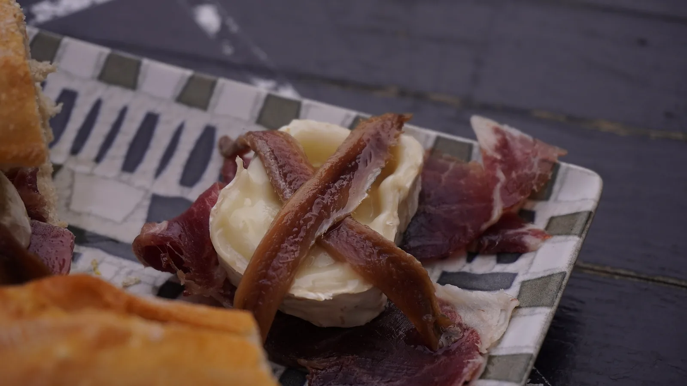
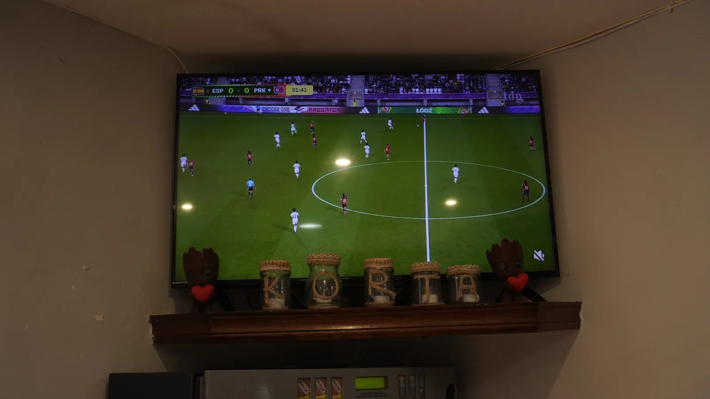

Pintxos, bocadillos y tradición vasca desde el corazón de Gipuzkoa


En el emblemático Barrio de Eitza, Korta Taberna es el punto de encuentro gastronómico donde la cocina tradicional vasca se vive en cada bocado. Con más de 40 años de historia, nuestra barra de pintxos diarios, raciones a la brasa y productos de caserío te esperan para disfrutar del mejor ambiente.
Situados a escasos minutos a pie del centro de Urretxu y en plena subida hacia la Ermita de La Antigua, unimos lo mejor de ambas localidades. Desde la anchoa del Cantábrico y el txangurro hasta la txuleta madurada: sabor, cercanía y pasión por el producto local.
Ingredientes frescos y de temporada seleccionados directamente de productores locales y del puerto.
Recetas tradicionales y técnicas culinarias vascas perfeccionadas a lo largo de décadas.
Un ambiente cercano, acogedor y dinámico que invita a compartir y disfrutar juntos.
Cocina ininterrumpida de 13:00 a 15:30 y de 20:00 a 22:00.
San Gregorio Kalea, 20 (Barrio Eitza)
20700 Zumarraga - Urretxu, Gipuzkoa
"El mejor pintxo de Zumarraga, sin duda. Ambiente inmejorable y el trato es como estar en casa. La tortilla de bacalao es espectacular. ¡Volveremos cada vez que pasemos por la zona!"
"Producto de primera y una barra que enamora. No te pierdas la txuleta, es de otro nivel. Relación calidad-precio difícil de superar. Enhorabuena al equipo."
"Taberna auténtica con un toque moderno. Los pintxos fríos y calientes son muy originales, y la selección de vinos es excelente. Recomiendo la tosta de anchoa. Solo echo en falta un poco más de espacio los fines de semana, pero merece la pena."
Queremos saber tu opinión. Tu reseña aparecerá instantáneamente en nuestra web.
Todo lo que necesitas saber sobre Korta Taberna (Zumarraga - Urretxu)
Korta Taberna se encuentra en San Gregorio Kalea, 20 (Barrio de Eitza, 20700 Zumarraga, Gipuzkoa). Al formar Zumarraga y Urretxu un único núcleo urbano continuo, estamos a tan solo 4–5 minutos a pie desde el centro de Urretxu (Areizaga Kalea) y desde la estación intermodal de tren y autobús de Zumarraga-Urretxu.
Totalmente. El Barrio de Eitza es el punto de paso natural para subir o bajar de la Ermita de La Antigua ('la catedral de las ermitas vascas') y se sitúa a solo 2 minutos del Hospital Comarcal de Zumarraga. Es el lugar perfecto para desayunos, hamaiketako, pintxos de barra, raciones o bocadillos rústicos.
Korta Taberna (a menudo buscada como Corta Taberna o Bar Korta) es el bar de pintxos, cocina tradicional, brasa y terraza situado en el Barrio de Eitza desde 1985. Korta Erretegia es un asador y restaurante de celebraciones y bodas ubicado en el Barrio San Lorenzo.
Abrimos todos los días de la semana: lunes a viernes de 09:00 a 22:30, sábados de 10:30 a 00:30 y domingos de 10:30 a 22:30. El horario de cocina caliente es de 13:00 a 15:30 y de 20:00 a 22:00, con barra continua de pintxos fríos y calientes durante todo el día.